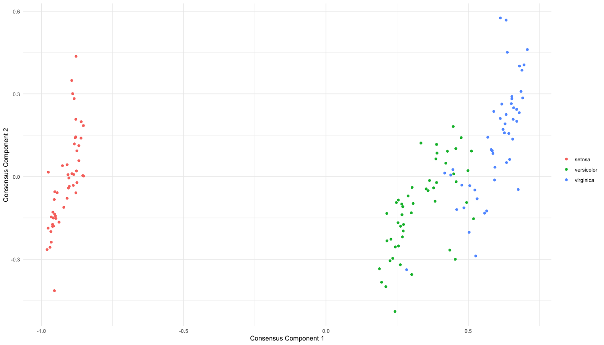
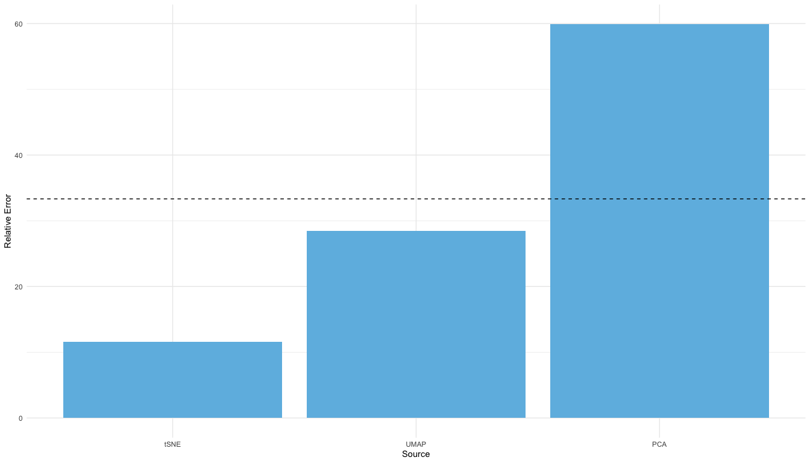
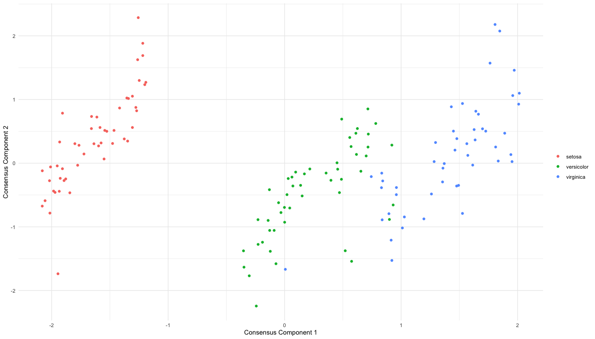
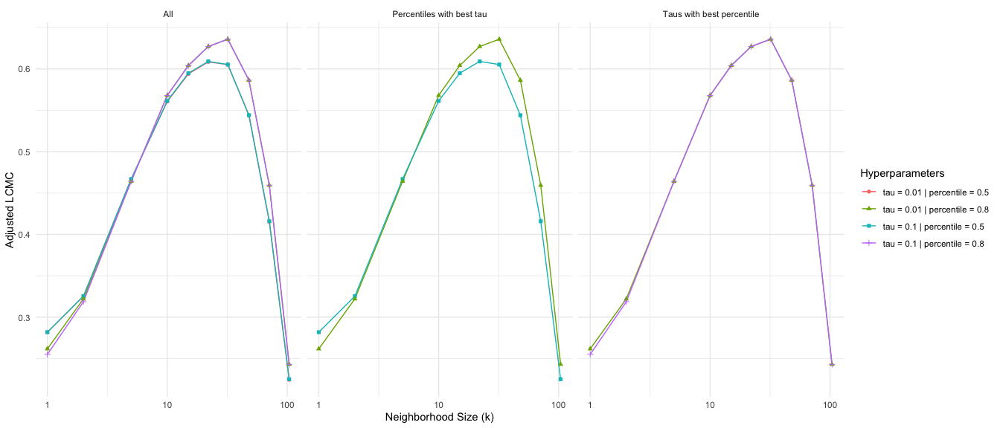
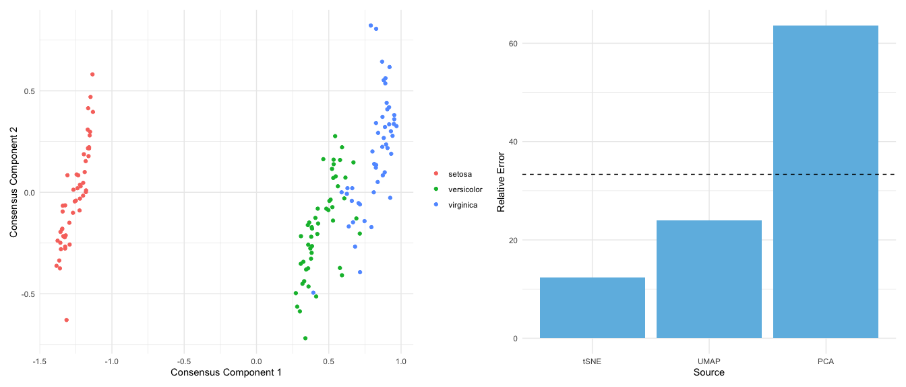

Different dimension reduction methods often output different and possibly conflicting visualizations of the same data. This problem is further exacerbated by the choice of hyperparameters, which may substantially impact the resulting visualization. To obtain a more robust and trustworthy dimension reduction output, we develop a multi-view framework called Consensus Multidimensional Scaling (CoMDS), which summarizes multiple dimension reduction visualizations (e.g., PCA, t-SNE, UMAP) into a single consensus visualization. This consensus visualization captures the common structure that is shared across different dimension reduction methods and hyperparameter settings. Such shared structure is likely more reliable than idiosyncratic structures, which are present in only one or a small subset of methods. In addition to CoMDS, we provide a local variant of CoMDS, Local Consensus Multidimensional Scaling (LoCoMDS), which further enhances robustness by preserving local consensus structures and decreasing the influence of outliers.
For more details, check out An, B., Tang, T. M. “Consensus dimension reduction via multi-view learning.” (2025).
Installation of the R package
You can install the coMDS R package from GitHub via:
# install.packages("devtools")
devtools::install_github("tiffanymtang/coMDS", subdir = "coMDS")Example Usage
To illustrate an example usage of coMDS, we apply it to the iris dataset, a classic benchmark dataset containing measurements of 150 iris flowers across three species.
# load in packages
library(coMDS)
library(dplyr)
library(ggplot2)
library(Rtsne)
library(umap)
library(patchwork)
# set seed
set.seed(331)Step 1
In this example, we first applied three different dimension reduction methods (i.e., PCA, t-SNE, and UMAP) to the iris dataset. In many real-world datasets, these dimension reduction methods can yield very different low-dimensional embeddings.
data(iris)
# remove duplicates so that t-SNE can run
iris <- dplyr::distinct(iris)
X <- iris[, 1:4]
species <- iris$Species
# fit various dimension reduction methods
pca_scores <- prcomp(X, center = TRUE, scale = TRUE)$x
tsne_scores <- Rtsne::Rtsne(X, dims = 2, perplexity = 30, verbose = FALSE)$Y
umap_scores <- umap::umap(X, n_components = 2, n_neighbors = 30, verbose = FALSE)$layout
dr_list <- list(
PCA = pca_scores,
tSNE = tsne_scores,
UMAP = umap_scores
)
# plot the dimension reduction embeddings
purrr::map(
dr_list,
~ as.data.frame(.x[, 1:2]) |>
setNames(paste("Component", 1:2)) |>
dplyr::mutate(species = species)
) |>
dplyr::bind_rows(.id = ".method") |>
ggplot2::ggplot() +
ggplot2::aes(x = `Component 1`, y = `Component 2`, color = species) +
ggplot2::geom_point() +
ggplot2::facet_wrap(~ .method, scales = "free") +
ggplot2::theme_minimal()
Step 2: CoMDS
Next, we can use CoMDS to produce a consensus embedding that reflects the shared, stable structure across the input dimension reduction methods. By leveraging multiple views, CoMDS generally provides a more robust and trustworthy low-dimensional embedding than a single method alone.
# fit coMDS
comds_out <- coMDS(embed_list = dr_list, ndim = 2)We can visualize the CoMDS consensus embeddings via
plot_coMDS(comds_out, color = species) and examine the relative error between each input embedding and the CoMDS consensus embedding via
plot_coMDS(comds_out, type = "relative_error")
Smaller relative errors indicate that the consensus embedding is more similar to that particular input dimension reduction embedding, relative to the other input dimension reduction embeddings.
Step 2: LoCoMDS
Alternatively, LoCoMDS can be applied to the same embeddings to produce a consensus embedding that prioritizes the local consensus structure (as opposed to the global consensus structure in CoMDS). LoCoMDS is particularly useful when the input embeddings contain outliers or when the input embeddings themselves are inherently local (e.g., t-SNE, UMAP). There are two hyperparameters in LoCoMDS: tau, which controls the degree of locality, and percentile, which controls the threshold for defining local neighborhoods.
# fit LoCoMDS with single choice of hyperparameters
locomds_single_out <- locoMDS(
embed_list = dr_list, ndim = 2, tau = 0.01, percentile = 0.5
)We can visualize the LoCoMDS consensus embeddings via
plot_coMDS(locomds_single_out, color = species)
and examine the relative error between each input embedding and the CoMDS consensus embedding via
plot_coMDS(locomds_single_out, type = "relative_error")
LoCoMDS can be run with either a single choice of hyperparameters (as above), or it can be tuned across multiple choices of hyperparameters to select the best consensus embedding.
# fit LoCoMDS and tune across multiple choices of hyperparameters
locomds_multi_out <- locoMDS(
embed_list = dr_list, ndim = 2, tau = c(0.01, 0.1), percentile = c(0.5, 0.8)
)
# tune LoCoMDS output
locomds_tune_out <- tune_locoMDS(locomds_multi_out, data = X)
locomds_tune_out$plot
When LoCoMDS is run with multiple choices of hyperparameters, the tune_locoMDS function can be used to select the best consensus embedding based on the adjusted local continuity meta-criterion (LCMC). Higher adjusted LCMC values indicate a better fit. In this case, it appears that on average across the different LCMC neighborhood sizes, percentile = 0.8 yields higher adjusted LCMCs than percentile = 0.5 while the choice of tau does not make any noticeable difference. Given a particular choice of tau and percentile, we can extract the LoCoMDS consensus embedding with these hyperparameters via
locomds_tuned_out <- extract_locoMDS(locomds_multi_out, tau = 0.1, percentile = 0.8)To plot the tuned LoCoMDS consensus embedding and their corresponding relative errors plot, we can use
p1 <- plot_coMDS(locomds_tuned_out, color = species)
p2 <- plot_coMDS(locomds_tuned_out, type = "relative_error")
patchwork::wrap_plots(p1, p2, nrow = 1)
We can alternatively examine the consensus embeddings and relative errors for all combinations of hyperparameters via
p1 <- plot_coMDS(locomds_multi_out, color = species)
p2 <- plot_coMDS(locomds_multi_out, type = "relative_error")
patchwork::wrap_plots(p1, p2, nrow = 1)